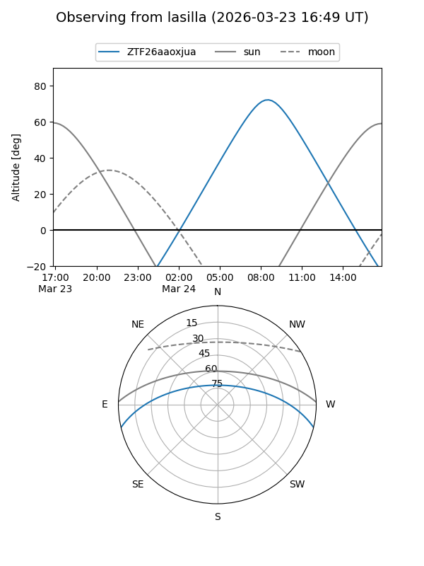
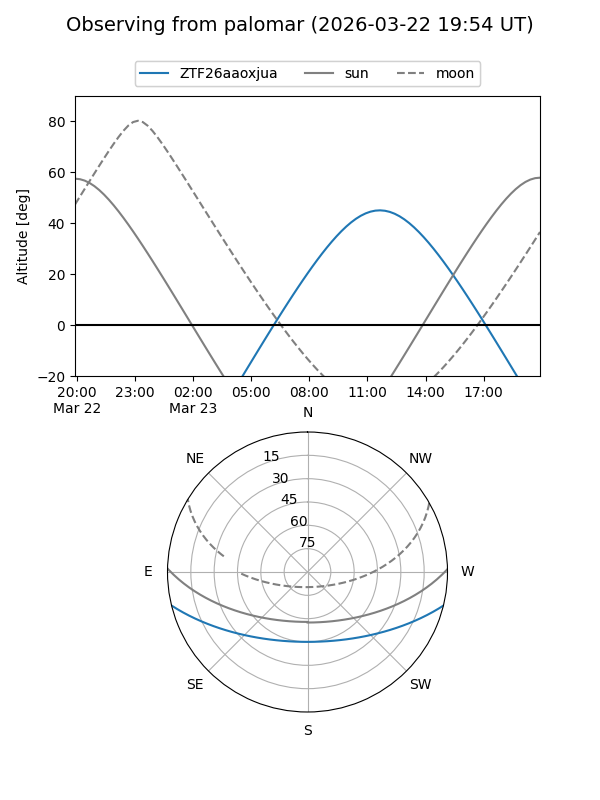

ZTF26aaoxjua
Target ZTF26aaoxjua at 2026-03-23 12:09
Aliases and brokers:
FINK: link
Lasair: link
ALeRCE: link
alt names
ZTF26aaoxjua (ztf,fink_ztf)
Coordinates:
equatorial (ra, dec) = 238.2584,-11.48036
equatorial (HMS+DMS) = 15:53:02.02,-11:28:49.30
galactic (l, b) = (357.8040,+31.44377)
Flags:
Photometry:
last ztfg=15.42
1 ztfg detections
Lightcurve
Visibility


Additional plots